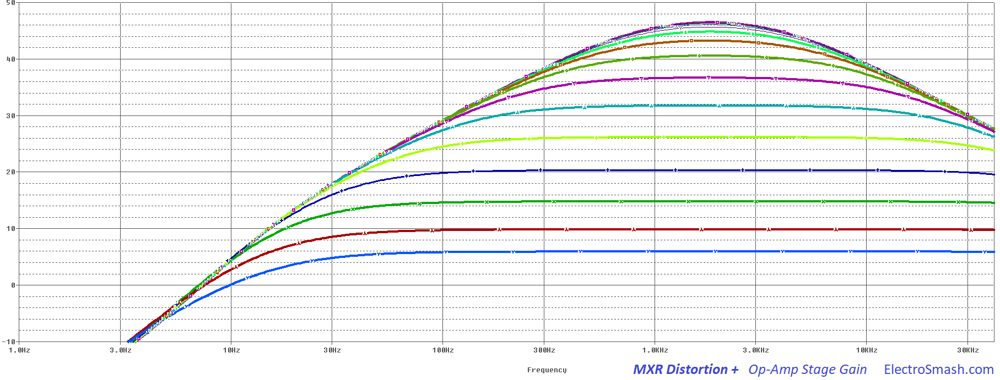
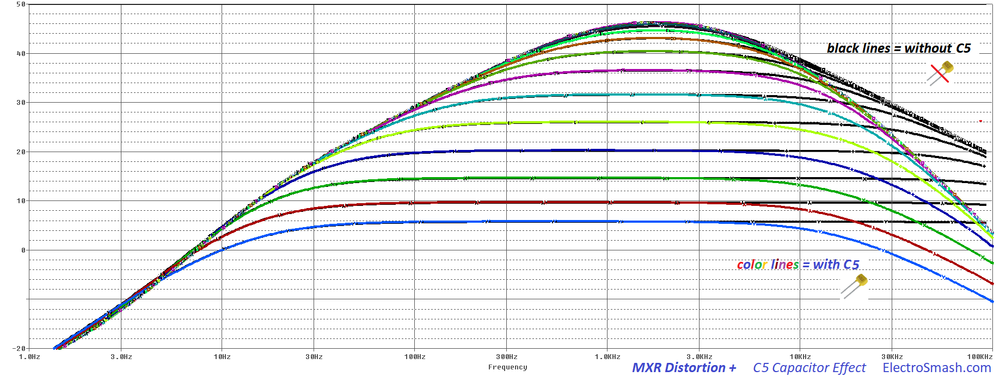

The M-104 MXR Distortion + aka Distortion Plus aka D+ is a distortion guitar pedal designed by MXR and released between 1978 and 1979. The original stompbox did not have external power jack or indicator LED. Jim Dunlop bought the MXR licensing rights and currently manufactures reissues of this classic MXR distortion effect (with a power jack and an LED).

The MXR Distortion + uses germanium diodes and its sound could be defined as mild fuzzy distortion, like all of the 70's rock and 80's metal recordings that made this iconic pedal famous. The design of this circuit was reliable and used later on as a starting point for the M-133 MicroAmp which is, in fact, a un-distorted redesign of this (previous) M-104 MXR Distortion+ pedal.
Table of Contents.
1. MXR Distortion Plus Schematic.
1.1 Power Supply Stage.
1.2 Op-Amp Amplifier Stage
1.3 Clipping Stage.
2. MXR Distortion + Frequency Response.
3. MXR Distortion + Sound Signature
1. MXR Distortion + Schematic.
The MXR Distortion + circuit can be divided into three blocks: Op-Amp Stage, Clipping Stage and Power Supply:
The simple and reliable design uses only 1 operational amplifier and a pair of germanium diodes in order to create a distortion effect that boosts the guitar signal up to 46dB, with a simple mild-hump frequency response and using only two potentiometers: Output (output level) and Distortion (op-amp gain). It does not feature a Tone control.
MXR Distortion + Circuit Layout
The original circuit is built on a single layer creme colored PCB, this PCB material was extensively used by MXR. All the components are placed on one side of the PCB that contains the inspiring text "hand built by guitar players". The jacks and potentiometers are hand-soldered to the board, which makes it quite labor intense during production. When Dunlop took over MXR, the PCB was redesigned using a more modern approach to the board: the power connector, LED, jacks and potentiometers are directly mounted on the PCB, making it easier/cheaper to be mass produced.
The MXR Distortion + Operational Amplifier: The 741
The 741 is a bipolar op-amp sourced by many manufacturers, designed in 1968 by David Fullagar at Fairchild Semiconductor after Bob Widlar's LM301 integrated circuit design.
The arrival of the LM741 was a considerable relief, it was the first really practical op-amp, and it was suddenly possible to build complex circuitry with a good chance of it being stable, doing what it should do, and not blowing-up at the first shadow of an excuse. The LM741 worked reliably; the snag with using it for audio was the leisurely slew rate of 0.5 V/µs, which made full output at 20 kHz impossible.
The noise in this part is pretty high (there are no noise specifications in the datasheet), the slew-rate is slow (0.5uV/s) which cannot cope with the audio band (up to 20KHz) but this is not necessarily a bad thing. Other mythic op-amps like the LM308 used in the Pro-Co Rat is even slower (0.3uV/s) and seems to contribute in a positive way to the distorted sound. To put it in context, other modern bipolar op-amps like the 4558 have a slew rate of 1.7uV/s (3 times faster than the 741).
In the Distortion + different flavors of the 741 were used during its life, the LM741CN operational amplifier that was later changed to a UA741CP and many others ( JRC741, LM741, etc ) players seem to tell difference between the old original op-amps and the new models. As usual, the vintage impossible-to-find are the best rated because seems to give a thicker/smoother distortion.
1.1 The Power Supply Stage.
The Power Supply Stage provides bias voltage and energy to the circuit:
The curious thing in this stage is the high-value resistors used for the resistor divider. 1MΩ is rather a high value (similar pedals use 100KΩ or 47KΩ for the same operation):
- This factor will reduce the power consumption of the pedal.
- The virtual ground created (+4.5V) will have a 1M//1M = 500KΩ impedance to ground. This will help to increase the input impedance of the circuit.
- The resistors junction (+4.5V) is decoupled to ground with an electrolytic capacitor C6 (1uF) which removes all ripple from the supply voltage.
1.2 Op-Amp Amplifier Stage.
The core of the circuit is this non-inverting op-amp which provides high input impedance, voltage gain, and signal filtering:
The op-amp is configured in a classic non-inverting topology, the resistors R3, R4, and the pot RV set the voltage gain as it will be seen in the Voltage Gain Section. Several capacitors C1, C2, C3, and C4 will filter the guitar signal as it is explained in the Frequency Response Section.
- The 1nF input cap to ground (C1) avoids RF noise going into the circuit, it also helps with ESD discharges.
- The (+) input of the op-amp (pin 3) is biased to 4.5V through the R2 resistor (1MΩ), keeping the virtual ground at 4.5V and being able to amplify bipolar guitar input signals. Usually, the value of this R2 resistor is 10x bigger than the resistor that creates the virtual ground (R6 and R7). In this case, the rule is not applied but the low input current of the op-amp makes that the voltage on pin 3 is pretty close to 4.5V. When using an op-amp with higher bias current/lower input impedance, the voltage on pin 3 could be lower than expected.
MXR Distortion + Input Impedance.
The input impedance is defined by the formula:
Zin = R1 + ( R2 // ZinOp-Amp ) + ZVirtual Ground
Zin = 10KΩ + ( 1MΩ // 2MΩ ) + 500KΩ = 1176KΩ
11MΩ is a good input impedance, not loading the guitar pickups and preventing tone sucking.
- As a rule of thumb, the input impedance of a pedal should be 1MΩ minimum.
- The Virtual Ground impedance (ZVirtual Ground) is defined by R6 and R7. ZVirtual Ground = 1MΩ//1MΩ. The fact that a very high value resistors are used to create the virtual ground (+4.5V) will help to increase the general input impedance of the pedal.
MXR Distortion + Voltage Gain.
The voltage gain is defined by the non-inverting operational amplifier and calculated as follows:
Gv = 1 + (R4 / (RV2 + RV))
Gv(min) = 1 + (1MΩ/ (4.7KΩ + 1MΩ)) = 1.5 (3.5dB)
Gv(max) = 1 + (1MΩ / (4.7KΩ + 0Ω)) = 213 (46.5 dB)
46.5 dB is a big amount of gain, other distortion guitar pedals have similar numbers: Klon Centaur (40dB), Boss DS-1 (35dB) or Tube Screamer (41dB), but still the Distortion + is the higher one.
This big amount of Gain may lead us to think that the op-amp power supply rails may clip the guitar signal. But the 2 diodes (D1 and D2) explained in the next section will limit and clip the guitar waveform when it reaches 700~800mVpp and before the power supply rails get into the mix.

In the image above, the output signal voltage level is shown sweeping the volume potentiometer. The gain goes from 3.5 to 46.5dB as calculated before. The humpy shape of the graph is explained in the Frequency Response section.
1.3 Clipping Stage.
The last stage is the clipping stage that contains two back to back diodes (D1 and D2) connected to ground. This type of topology adds a hard clip distortion, making the audio signal to clip with a hard knee which creates a strong distortion.
- The R5 resistor is needed to limit the amount of current into the diodes, 10KΩ is a pretty standard value, other pedals like the Boss DS-1 uses 2.2KΩ, the Pro-Co Rat uses 1KΩ and the Klon Centaur 1KΩ.
- The RV-Output 10K potentiometer will control the output volume using a 10K potentiometer which bleeds part of the input signal to ground.
The MXR Distortion + Diodes: The 1N270 Germanium
The 1N270 are the germanium diodes used in the MXR Distortion +. They are the most important factor for the distortion sound signature. People also try other popular germanium diodes, like the 1N34A (used in the Klon Centaur) or the 1N60. They all sound subtly different.
These germanium diodes have a small forward voltage (Vf=0.3 to 0.45V) and a soft-saturation behavior compared to modern silicon diodes (Vf=0.7V). This low Vf will add extra compression to the distorted guitar signal.
The 1nF C5 Capacitor:
The 1nF C5 cap placed in parallel with D1 and D2 is used to filter out the harsh high harmonics. The resistor R5 and C5 form a low pass filter with fc= 1/(2 x π x R5 x C5) =15.9KHz that will mellow the severe clipping applied by the diodes. This kind of cap is used in many other similar pedals like the Boss DS-1 (using a 2K2 resistor and a 10nF cap ), the Pro-Co RAT (using a 1.5K resistor and a 3.3nF cap).

In the graph above you can see the difference between using or not this 1nf cap in parallel with the clipping diodes. Freqs over 15.9KHz get attenuated generating a softer tone with less bright harmonics.
2. MXR Distortion + Frequency Response.
The tone response of the Distortion Plus features a mid hump around 1.5KHz, helping the guitar to shine over the band mix. To do this a series of caps are used to create filters that shape the frequency response like the graph below:
Some other distortion pedals in the same Distortion + category show a mid hump relatively similar: the Tube Screamer at 723Hz, and the Pro-Co Rat at 1KHz.
To do so, 4 capacitors are used to place 4 poles and tailor the tone response:
- C2 (10nF): Together with the input impedance of the circuit, calculated before as 676KΩ creates a high-pass filter. This input cap will just remove and DC content from the guitar signal, it has no effect at all on the audio signal. The cut-off frequency can be calculated as:
fc2 = 1 / (2 x π x Zin x C2)
fc2 = 1 / (2 x π x 676KΩ x 10nF ) = 23.5Hz.
- C3 (47nF): This capacitor and the series resistors R3 and RV from the (-) input to ground act as a high-pass filter. Many other guitar pedals like the Tube Screamer (C3), the Pro-Co Rat (C5, C6), the Boss DS-1 (C8) and the MicroAmp (C3) have a cap at the same point. The intention is to attenuate low frequencies that can overload the op-amp, causing instability or hum. The cut frequency can be calculated as:
fc3 = 1 / (2 x π x (R3 + RV) x C2)
fc3(with MAX Gain) = 1 / (2 x π x (4.7KΩ + 0Ω) x 47nF ) = 720Hz
fc3(with MIN Gain) = 1 / (2 x π x (4.7KΩ + 1MΩ) x 47nF ) = 3Hz
So the frequency response will slightly change with the gain of the pedal, with maximum gain (RV=0Ω) the bass will start to roll-off at 720Hz, this is why if you look at the hump, from 0 to 720Hz the shape is steeper as the gain is higher.
- C5 (1nF): together with R5 (10KΩ) creates a low-pass filter, the cut-off frequency is calculated as:
fc5 = 1 / (2 x π x R5 x C5)
fc5 = 1 / (2 x π x 10KΩ x 1nF ) = 15.9KHz.
As mentioned before in the Clipping Stage, this 1nF cap will remove the harsh harmonics from the clipping action, resulting in a smoother distortion.
note: The C1 and C4 caps will not affect the frequency response shape; the small 1nF C1 from the input to ground is placed to reduce RF noise, oscillation, and ESD protection. The big 1uF C4 cap between the Op-Amp Stage and the Clipping Stage will remove DC voltage, it is big enough so any amp or pedal connected to the output of the Distortion + will have an impedance big enough to not affect the frequency response.
MXR Distortion + Output Impedance.
As a rule of thumb, it is good for a guitar pedal to have a low output impedance, values around tens of KΩ are the usual. In the Distortion + the output impedance is calculated as:
Zout = R5 + Op-Amp output impedance.
Zout = 10K + 75 = 10K approx.
note: The output impedance of the 741 operational-amplifier is around 75 ohms.
3. MXR Distortion Plus + Sound signature:
The mild fuzzy sound of the MXR Distortion + comes from the germanium diodes and the op-amp saturation:
- Germanium Diodes Clipping: The maximum gain that the Op-Amp Stage provides is 46.5dB of gain ( around x200). The Clipping Diode Stage will clip any signal bigger than 350mV (or 700mVpp), so at the beginning of the Distortion potentiometer sweep, when a standard guitar signal (100 - 200mVpp) is amplified more than x3.5 times (10.8dB) the signal will start clip due to the diodes and create a Germanium smooth type distortion.
Once the guitar signal starts to clip, the Distortion potentiometer still has a long sweep, so the guitar signal will get more and more steep and saturated creating harder distortion sounds.
The Frequency Response shows a classic lead guitar distortion pedal, this is a mid hum on the 1KHz region that helps to the guitar to lead over the band mix.
- Premier Guitar MXR Distortion + Mods
- MXR Distortion Effect Project.
- 741 Op-Amp in Wikipedia.com
- Op-Amps History in EETimes.com
Our sincere appreciation to J. Parać, T. Van Ginkel and JP Desruisseaux for helping us with the article.
Thanks for reading, all feedback is appreciated.
Some Rights Reserved, you are free to copy, share, remix and use all material.
Trademarks, brand names and logos are the property of their respective owners.


{kind=link}
{kind=link}
{kind=link}
{kind=link}
{kind=link}
{kind=link}
{kind=link}
{kind=link}
{kind=link}
{kind=link}